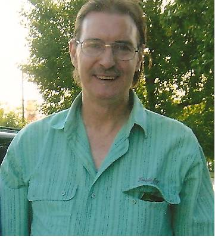

Randy L. Deckard
April 17 1955 to Jan. 30 2010
Relationship to St. Andrew United Methodist Church:
Member of St. Andrew United Methodist Church.
Family:
Parents: Myron Deckard and Doris Deckard (deceased)
Sisters: Donna D. Deckard from Socorro, N. M. and Lou Ann Zachariah from Colorado Springs, CO. A third sister, Myra Arnell Deckard proceeded him in death.
Recognitions, Activities, Special Interests:
Randy was a fan of Nascar racing and Football. He enjoyed woodworking.
Use of Memorial Funds:
Funds were used for construction of the picnic shelter on Church grounds.
February
1, 2010
Randy L. Deckard, 54
Randy L. Deckard, 54, of West Lafayette, died at 1:05 a.m. Saturday, Jan. 30, 2010, at Heritage Health Care.
He was born April 17, 1955, in Lafayette, to Myron B. Deckard of West Lafayette and the late Doris Johnson Deckard. He graduated from Harrison High School.
Mr. Deckard was a member of St. Andrew United Methodist Church.
Surviving with his father are two sisters, Donna D. Deckard of Socorro, N.M. and Lou Ann Zachariah of Colorado Springs, Colo.
Randy was preceded in death by a sister, Myra Arnell Deckard.
Visitation will be two hours prior to a 2 p.m. service Thursday, Feb. 4, 2010, at Soller-Baker West Lafayette Chapel, 1184 Sagamore Parkway West, West Lafayette, the Revs. Tim Burchill and Pat Sleeth officiating. Interment at Tippecanoe Memory Gardens. Those wishing may contribute to St. Andrews United Methodist Church or Serenity Hospice. You may offer condolences at www.soller-baker.com

The picnic shelter completed in July of 2013